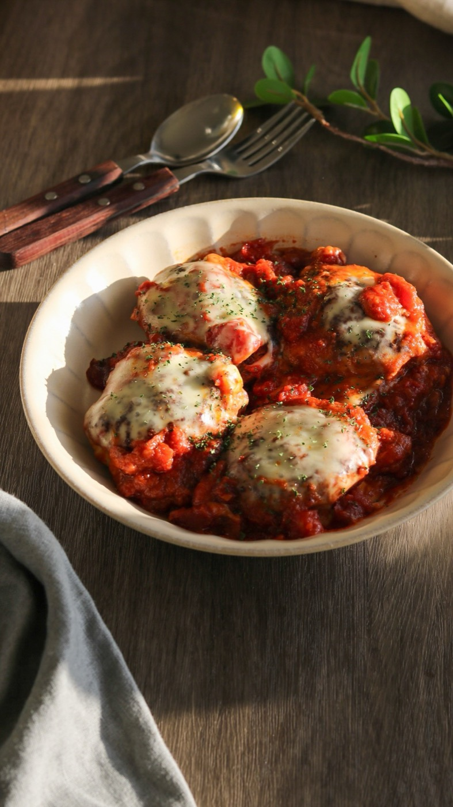

Aya Chef — Une Seule Poêle
洗い物を増やさずに、2皿を出すために

お肉を焼いたフライパンに、そのままトマトを入れる。それだけでソースになります
フライパンを2つ出すと、洗い物も2つになります。
でも本当は、1つのままのほうがおいしくなるんです。
お肉を焼いたあとのフライパンには、うまみが残っていますよね。
そこに野菜を入れる。それだけで、味が移ります。
01
02
お肉に塩をふる
お肉の重さの1％です。300gなら3g（小さじ半分）。これで味が毎回決まりますフライパンで焼く
動かさないでください。焼き色は、触らない時間がつけてくれますお肉を取り出して、休ませる
アルミホイルをかぶせて5分。切ったときに肉汁が流れ出なくなります同じフライパンに野菜を入れる
洗わないでください。茶色くこびりついたところが、いちばんおいしいところです白ワインを大さじ2、入れる
木べらで底をこそげます。こびりつきが溶けて、ソースになります火を止めて、冷たいバターを入れる
10gで十分。ゆすって混ぜると、とろりとします。ここがフレンチなんですお肉を切って、盛る
ソースは先にお皿に敷いて、その上にお肉を置くとお店みたいになります03
包みの大きさをそろえる
大きさが違うと、火の通りがばらばらになります野菜を下に敷いて、その上に魚やお肉
野菜が台になるので、シートにくっつきません。しかも野菜がうまみを吸います弱火で15分。蓋はあけない
あけると蒸気が逃げます。心配でも、15分は我慢してくださいね包んだまま食卓に出す
あけた瞬間の香りが、いちばんのごちそうです。盛り直すと消えてしまいますAya Fukazawa — Cuisine de Tous les Jours